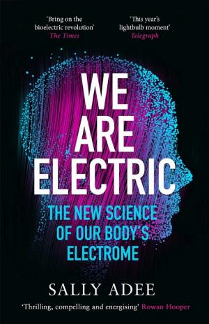

1.3.4 — Il corpo elettrico
C’è un filo elettrico che attraversa la storia del corpo umano, e parte dal Settecento. Nel tardo Settecento l’Italia era al centro del mondo elettrico, e ci si chiedeva se l’elettricità fosse naturale o propria solo dei materiali creati dall’uomo, come i metalli. Luigi Galvani sosteneva la tesi naturale e fece esperimenti con così tante rane che in alcune zone sparirono quasi del tutto. Alessandro Volta si concentrò sui metalli, inventò la prima batteria e oscurò per un po’ le scoperte di Galvani. Un premio da 60.000 franchi per creare una «batteria animale» spinse gli scienziati alla follia: Alexander von Humboldt arrivò a inserirsi fili elettrici nel proprio retto. Con questa storia comincia We Are Electric di Sally Adee, scrittrice scientifica per New Scientist e The Economist (🤴 ff.105.1 Trasformare una rana in principe azzurro?).
Con la scoperta dei neurotrasmettitori — molecole, quindi chimica — il ruolo della corrente nei processi biologici sembrava definitivamente eclissato. Ci vollero Hodgkin e Huxley (Nobel 1963) per misurare il potenziale d’azione nei neuroni[1] — con un calamaro gigante — e Neher e Sakmann (Nobel 1991) per isolare i canali ionici[2]. Oggi l’influenza dell’elettricità nei processi biologici si sta espandendo ulteriormente: dai campi bioelettrici che guidano la rigenerazione tissutale[3] fino all’idea che il corpo sia, a tutti gli effetti, un circuito programmabile (🧠 ff.105.2 Rane, cervelli e c-anali ionici).
L’elettricità dei viventi si può perfino suonare. Anni fa il musicista Modern Biology è diventato virale su TikTok controllando un sintetizzatore con i funghi; con la scozzese Instruo ha poi costruito il Pocket Scion, un sintetizzatore da 149 dollari[18]: due sensori appoggiati a una pianta, a un fungo o alla pelle chiudono un circuito, e le piccole variazioni elettriche diventano dati MIDI e paesaggi sonori.
Un’altra traccia arriva dallo sport professionistico. Iñigo San Millán, responsabile delle prestazioni del team UAE-Emirates e allenatore di Pogačar, studia l’intersezione fra il metabolismo degli atleti e il cancro. Circa cento anni fa Warburg notò nelle cellule tumorali un forte accumulo di lattato, anche in presenza di ossigeno, come se i mitocondri non lavorassero bene; San Millán ha ripreso quell’effetto Warburg, ipotizzando che lo stesso lattato da smaltire per vincere il Tour de France possa favorire sviluppo e diffusione del cancro. Come termine di paragone per la salute propone gli atleti al posto dell’occidentale medio, un po’ sovrappeso e sedentario: come la Formula 1 ci ha dato il GPS e il KERS, lo sport potrebbe aiutare contro i tumori (🥇 ff.53.2 Sportivi professionisti in nostro aiuto).
Quando il corpo si ferma, l’elettricità serve anche a dormire. Il dispositivo Somnee usa la stimolazione transcranica per avvicinare la distribuzione delle onde cerebrali a quella del sonno, dalle onde beta della veglia alle onde alfa: un massaggio rilassante, ma al cervello, che futuro fortissimo giudicava meglio della melatonina (😴 ff.75.2 Ninna nanna neurale).
La stimolazione del cervello va oltre il sonno. Al MIT il gruppo di Li-Huei Tsai ha raccolto in una rassegna le prove che potenziare i ritmi gamma a 40 hertz[16], con luce, suono o stimolazione elettrica e magnetica, riduce la patologia dell’Alzheimer nei topi e negli studi sull’uomo migliora cognizione e memoria; gli autori avvertono che le prove cliniche restano preliminari. E c’è chi usa gli ultrasuoni per far sentire un odore che non c’è: un simulatore punta ultrasuoni focalizzati attraverso il cranio[17] sul bulbo olfattivo, a 300 kHz e con il fuoco a circa 39 millimetri sotto la fronte; secondo i ricercatori nessuno l’aveva mai fatto, nemmeno sugli animali.
Resta da capire quanto riposo serva davvero. Molti pazienti, scrivono Daniel Kripke e i colleghi del dipartimento di psichiatria dell’Università della California a San Diego, si lamentano di dormire poco perché convinti di aver bisogno di otto ore. Per verificarlo sono tornati al Cancer Prevention Study II dell’American Cancer Society, che nel 1982 aveva chiesto a più di 1,1 milioni di persone, fra i 30 e i 102 anni, quanto dormissero e quanto spesso soffrissero d’insonnia, e ne aveva seguito la mortalità fino al 1988. Il risultato, pubblicato nel 2002 su Archives of General Psychiatry, è che la sopravvivenza migliore è quella di chi dorme sette ore per notte[11]. Chi dichiarava otto ore o più aveva un rischio di morte significativamente più alto, e così chi ne dormiva sei o meno. L’aumento superava il 15% soltanto agli estremi: oltre le otto ore e mezza, oppure sotto le tre ore e mezza o le quattro e mezza.
Il secondo risultato riguarda l’insonnia. Chi riferiva di dormire male non mostrava un eccesso di mortalità; lo mostrava invece chi prendeva sonniferi su ricetta, anche a parità di ore dormite e d’insonnia dichiarata. Gli autori concludono che chi dorme poco o soffre d’insonnia può essere rassicurato, perché il rischio sembra minimo una volta messe da parte le malattie che accompagnano il cattivo sonno; i lievi rischi legati alle otto ore e più e ai sonniferi vanno ancora studiati. È lo stesso sospetto verso l’approccio «a pillola» che futuro fortissimo ha rivolto alla depressione, citando uno studio di Stanford su 35.000 persone in cui sei settimane senza Facebook e Instagram l’hanno ridotta (🍵 ff.151.5 (Digital) detox). Prima di un farmaco vengono le abitudini: la luce del sole appena svegli, un paio d’ore di attesa prima del primo caffè, poca luce intensa fra le 22 e le 4 (💤 ff.35.4 Super-dormita e super-focus).
Le cautele stanno nell’articolo stesso. Lo studio è osservazionale: le ore di sonno sono quelle dichiarate dai partecipanti in un questionario del 1982, e i modelli statistici tengono conto di dati demografici, abitudini, stato di salute e farmaci, senza poter escludere tutto il resto. L’ultima frase dell’abstract è netta: il nesso di causa non è dimostrato. Oggi il sonno si può misurare in casa senza affidarsi alla memoria, e Nest Hub 2, lo schermo di Google per la casa intelligente, segue il ritmo sonno-veglia con un radar 3D (🩺 ff.28.4 Metti la canottiera (o ti senti fortunato?)).
Ma perché tornare al corpo, proprio ora? Ogni settimana viene rilasciato un modello di AI con risultati sorprendenti: Gemini 3 raggiunge il 48,4% nell’Humanity’s Next Exam[4]. Al crescere dell’automazione, l’uomo dovrà rifugiarsi nella fisiologia, substrato naturale. “Se energia e soldi perderanno valore, la salute biologica (misurata in VO₂max) sarà la nuova ricchezza?” È il motivo per cui futuro fortissimo torna periodicamente su salute metabolica, esercizio e dieta: un ritorno all’umano ridotto all’osso. Montale, negli Ossi di seppia[5], descriveva “l’uomo che se ne va sicuro, agli altri ed a se stesso amico, e l’ombra sua non cura che la canicola stampa sopra uno scalcinato muro” (🙅 ff.112.2 Non possiamo prevedere nulla; 🦴 ff.145.1 L’uomo all’osso).
E c’è un dato in più nella relazione tra sport e cancro. I battiti elevati dello sport possono spaccare alcune cellule tumorali metastatiche[6] attraverso le forze circolatorie generate dall’aumento della portata cardiaca. Non tutte le cellule sono sensibili a questo stress meccanico, ma l’esercizio fisico può anche normalizzare l’irrorazione dei tumori, migliorando l’efficacia delle terapie in atto (⚔️ ff.120.5 Tumore vs battiti cardiaci?).
E quando i battiti non bastano, arriva la biologia programmabile. Il report annuale di ARK Invest sui Big Ideas quantifica una rivoluzione silenziosa: le terapie a RNA hanno un tempo di sviluppo drasticamente ridotto rispetto alle piccole molecole tradizionali, e un costo clinico dimezzato. È il motivo per cui un vaccino contro il COVID è arrivato in meno di un anno. Il mercato di prevenzione, terapie e screening oncologici è proiettato a moltiplicarsi di cinque volte tra il 2022 e il 2030. La prova della tesi arriva proprio mentre scriviamo: il vaccino mRNA di Moderna-Merck ha ridotto del 49% il rischio di morte o recidiva da melanoma[7] in un trial quinquennale Phase 2b, combinato con Keytruda. Otto trial paralleli in Phase 2-3 su tumori diversi confermano che la tecnologia non è melanoma-specifica. (🧬 ff.66.4 ARK, RNA, AI e altri acronimi).
La biologia programmabile arriva anche al cervello. All’Università della Florida un vaccino a mRNA personalizzato, fatto con le cellule del tumore del paziente e avvolto in aggregati di particelle lipidiche, è stato provato per la prima volta sull’uomo contro il glioblastoma, su quattro pazienti adulti, e in parallelo su dieci cani con tumori cerebrali spontanei. «In meno di 48 ore vedevamo questi tumori passare da freddi a caldi»[13], dice Elias Sayour, che ha ideato il vaccino: da tumori con poche cellule immunitarie a tumori con una risposta immunitaria molto attiva. Il prossimo passo è un trial di fase I più ampio, con adulti e bambini.
Il problema è la consegna: l’RNA va portato dove serve, e l’intelligenza artificiale lavora proprio sulle particelle che lo trasportano. L’israeliana Mana.bio ha raccolto 19,5 milioni di dollari per progettare con l’AI nanoparticelle lipidiche[14] che portino RNA e terapie geniche a tessuti fuori dal fegato. Alla Duke TuNa-AI, un sistema di machine learning abbinato a una piattaforma robotica e addestrato su 1.275 formulazioni, ha aumentato del 42,9% le nanoparticelle formate con successo[15], e in una formulazione del trametinib ha ridotto del 75% gli eccipienti mantenendo l’efficacia.
E il ritorno economico di un vaccino è ancora più controintuitivo del suo meccanismo biologico. Bill Gates, nella sua annual letter del 2017, mostra che il vaccino pentavalente — quello somministrato di routine ai neonati prima del primo anno di vita — costa circa un euro a dose; negli ultimi dieci anni i vaccini hanno prevenuto quasi venticinque milioni di morti, metà della popolazione italiana. Se si integrano le spese mediche risparmiate e il contributo economico degli individui salvati, ogni euro investito in vaccinazione ne genera almeno sedici. E i vaccini hanno anche effetti secondari. Il vaccino anti-herpes zoster previene anche la demenza[8], come confermano studi globali multipli: il virus Varicella-Zoster, riattivandosi nei gangli nervosi, contribuisce a processi neurodegenerativi che la vaccinazione interrompe a monte. La prevenzione di una malattia infettiva si sta rivelando, nei dati, prevenzione di una malattia neurologica (💉 ff.32.4 Vaccini meglio dello stock market).
Un vaccino addestra il sistema immunitario con un’iniezione. Alla UCLA hanno provato ad addestrarlo alla fonte, nel midollo osseo, dove nascono le cellule del sangue. Nel luglio 2025 l’università di Los Angeles ha annunciato un trial clinico, il primo sull’uomo, in cui le staminali del sangue vengono riprogrammate per produrre cellule T contro il cancro[12], di continuo. Le cellule T sono gli agenti più potenti del sistema immunitario contro i tumori, e le terapie che le modificano in laboratorio esistono già. Il limite, spiega Theodore Scott Nowicki, il medico-ricercatore che ha guidato lo studio, sta nei tumori solidi: la terapia funziona all’inizio, poi le cellule infuse muoiono o si esauriscono e il beneficio svanisce.
L’idea è passare dalla scorta alla fabbrica. Con le tecniche della terapia genica si inserisce nelle staminali del paziente il recettore che riconosce il tumore, poi le si reimpianta con un trapianto di midollo, e il corpo continua a sfornare cellule T già puntate sul bersaglio: per Nowicki, un aggiornamento permanente delle difese. Nel 2023 Packy McCormick metteva fra le buone notizie che nessuno racconta proprio questa, il fatto che riprogrammiamo le cellule T per combattere i tumori (➕ ff.59.3 L’importanza di raccontare storie positive).
Il recettore scelto punta a NY-ESO-1, un antigene detto «cancro-testicolo»: compare in diversi tumori, fra cui melanoma e sarcoma, e quasi mai nei tessuti sani di un adulto, così le cellule addestrate a cercarlo dovrebbero risparmiare il resto del corpo. Il trial è partito dai sarcomi, tumori rari e aggressivi che dopo chemioterapia e chirurgia tornano spesso, lasciando pochissime opzioni: circa l’80% dei sarcomi sinoviali porta quel marcatore. Per arrivare dai modelli preclinici al paziente, racconta Antoni Ribas, che dirige il programma di immunologia dei tumori, sono serviti più di trenta ricercatori e oltre un decennio; con loro David Baltimore del Caltech, e i risultati sono usciti su Nature Communications. Per CRISPR/Cas9 di anni ne sono bastati meno di dieci, fra la scoperta premiata col Nobel nel 2020 e la prima terapia approvata dall’FDA, contro l’anemia falciforme che colpisce venti milioni di persone (🩹 ff.81.4 Terapie geniche).
I risultati vanno letti con il loro peso. Dei cinque pazienti arruolati, solo tre hanno ricevuto entrambe le infusioni: uno non è riuscito a fornire abbastanza staminali, un altro si è ritirato perché la malattia avanzava. Le staminali modificate hanno attecchito e prodotto cellule T funzionanti, e un gene aggiunto apposta ha permesso di vederle nel midollo con la PET, per la prima volta nell’uomo. In due pazienti il tumore si è ridotto. La fabbrica però non ha retto: in un paziente le staminali erano sparite al controllo del giorno 120, in un altro non hanno mai attecchito, e la paziente in cui avevano attecchito meglio è morta al giorno 76 per un’infezione da citomegalovirus, presa mentre il sistema immunitario si ricostruiva. Gli autori scrivono che i rischi dell’approccio potrebbero superare il beneficio; Nowicki, nell’intervista, che non è ancora una cura né è pronta per un uso diffuso.
Servono raccolta delle staminali, modifica genetica e chemioterapia ad alte dosi, quindi tempo, competenze e un paziente forte: complicato, ammette, come lo erano i trapianti di midollo ai loro inizi. Con la stessa prudenza va letto l’mRNA contro il melanoma: Moderna ha guadagnato circa 30 miliardi di dollari di capitalizzazione con i dati di fase 3 di una terapia personalizzata contro le recidive del melanoma, ancora sperimentale (💉 ff.155.4 Modernità contro il cancro). Se la strada regge, dice Nowicki, le staminali modificate potrebbero servire anche contro l’HIV, o per rieducare il sistema immunitario nelle malattie autoimmuni.

Un filo lega una bicicletta elettrica, un reattore a fusione e il cervello addormentato: l’energia, a scale diverse. Partiamo dal marciapiede. Durante la pandemia, negli Stati Uniti le e-bike hanno venduto il doppio delle auto elettriche, cinquecentomila biciclette contro duecentocinquantamila automobili, e un report Deloitte prevedeva centotrenta milioni di bici elettriche vendute nel mondo fra il 2020 e il 2023. Con la pedalata assistita la quota di spostamenti su due ruote passa dal 19 al 50%, un incremento che secondo gli autori non dipende dalla novità. John Surico, sul New York Times, parla di una “gioia infantile, elettrizzante e liberatoria” (🚲 ff.5.3 Pedalata assistita).
Su scala più grande c’è la fusione nucleare. Nel 1976 si stimava che, con un investimento di nove miliardi l’anno, sarebbe stata realtà all’inizio degli anni Novanta; oggi ITER punta al 2035 per dimostrare un processo di fusione «pulito». La via è molto lunga, come racconta un altrettanto lungo articolo del New Yorker (⚡ ff.1.6 Fusione Nucleare).
E poi c’è l’energia che il cervello spende per ripulirsi. Durante il sonno il liquido spinale porta via i rifiuti, come una nettezza urbana del cervello: un’animazione condivisa da Slava Bobrov mostra le onde di liquido che lo lavano mentre dormiamo (🤯 ff.2.7 Dormiteci sopra!).
Apnea da newsletter? Ecco un esercizio: la tecnica del 3-4-5. Inalare per tre secondi, trattenere il respiro per quattro, espirare per cinque. Le evidenze scientifiche[10] confermano che pattern respiratori controllati attivano il sistema parasimpatico, abbassando cortisolo e frequenza cardiaca. (💆🏻♀️ ff.87.4 Respirare contro lo stress: il metodo 3-4-5).